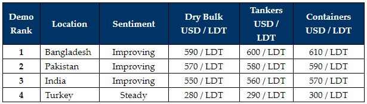

inWeekly Demolition Reports26/07/2021

As the Bangladeshi market surpasses the previously unreachable threshold of USD600/Ton, the supply of tonnage appears to have dried up once again as the summer / monsoon holiday months continue at pace (& Eid holidays conclude this week).
Several deals were reportedly concluded into Chattogram this week, at levels well above the USD 600/LDT mark. However, competing markets have yet to follow suit, with both Pakistan and India stranded some ways behind the market leader.
A lot of the recent bullish optimism can be attributed to the fact that domestic construction projects are going ahead at great pace in Bangladesh, and China is still importing most of their steel in order to satisfy domestic demand.
On the far end, Turkey remained closed for the entire working week, as Turkish Recyclers celebrated Eid.
Vaccine roll-outs continue across the globe as humanity learns to cope with Covid-19 (in addition to the now increasingly dangerous Delta variant) and this weekend saw some of the highest air traffic numbers in the U.S.A. and U.K., as attempts to get global travel back on its feet in the most vaccinated countries, finally steps up.
Covid cases across the sub-continent show few signs of slowing. However, many are observing that the peaks have passed and a dire need for oxygen supplies to be re-directed to hospitals, is no longer as urgent a requirement as it recently was.
As such, sub-continent recycling markets remain positively poised going into the second half of the year. Notwithstanding, there is always a note of caution for a market that has doubled in offerings in the space of a year as what goes up, must eventually come down!
For week 30 of 2021, GMS demo rankings / pricing for the week are as below.

Download PDFSource: GMS